PROJECT COLLECTION
Unreal Engine projects
Individual projects, source downloads and preview images. Runtime verification is listed on each overview.


Unreal Engine · Browser adaptation
First-Person Foundations
A first-person game project that puts the player’s viewpoint directly inside a three-dimensional scene. Movement and camera control provide the foundation for exploring and interacting with its levels.
- First-person perspective
- Player movement
- Three-dimensional scene exploration
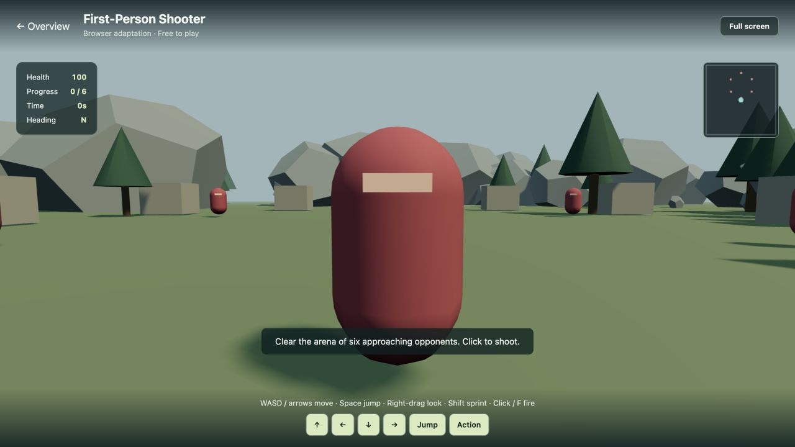


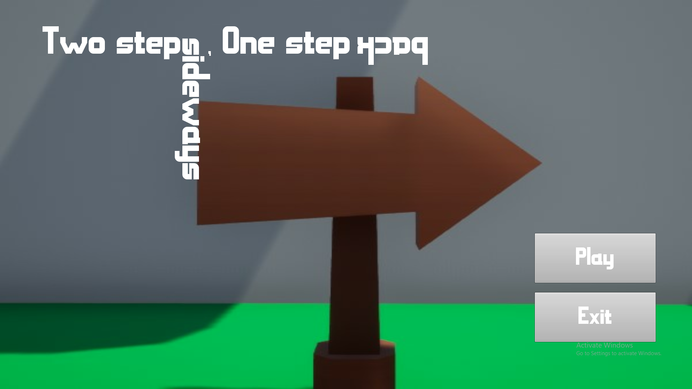


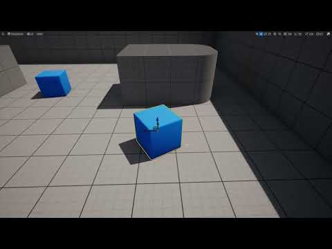

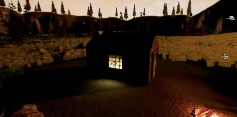
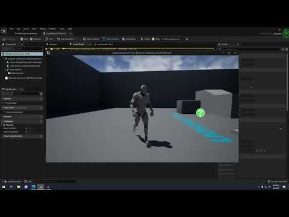

Unreal Engine · Browser adaptation
Battle Royale
A battle-royale game project organized around a controllable character and a three-dimensional combat setting. The available source provides the project foundation, while the overview introduces its visual scene.
- Three-dimensional combat setting
- Player-control foundation
- Available project source
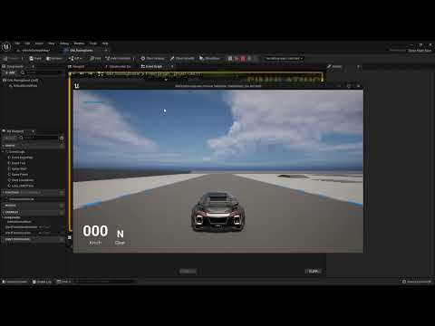
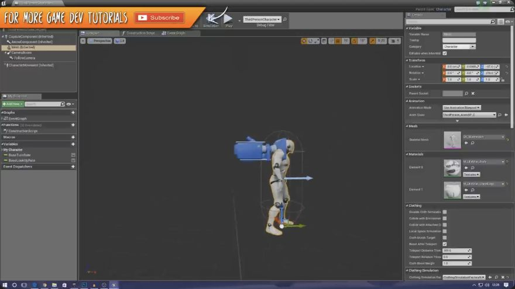


Unreal Engine · Browser adaptation
AI Playground
An Unreal Engine scene for exploring AI characters and interactive gameplay systems in a three-dimensional environment. The project brings character behavior into a level where its relationship with the surrounding space can be observed.
- AI character systems
- Three-dimensional game scene
- Interactive project source

Unreal Engine · Browser adaptation
Axe Throw & Recall
An interactive third-person axe mechanic built around aiming, throwing, impact, and recall. The axe moves between the character and the environment, making its flight and return the central interaction.
- Aimed weapon throws
- Surface impacts and attachment
- Weapon recall to the character

Unreal Engine · Browser adaptation
Compass & Radar
A navigation interface that combines a directional compass with radar and points of interest. It helps communicate where the character is facing and how nearby locations relate to that direction.
- Directional compass
- Radar presentation
- Points of interest

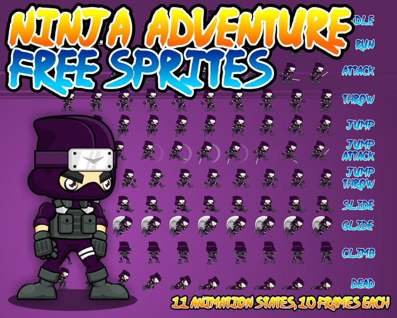
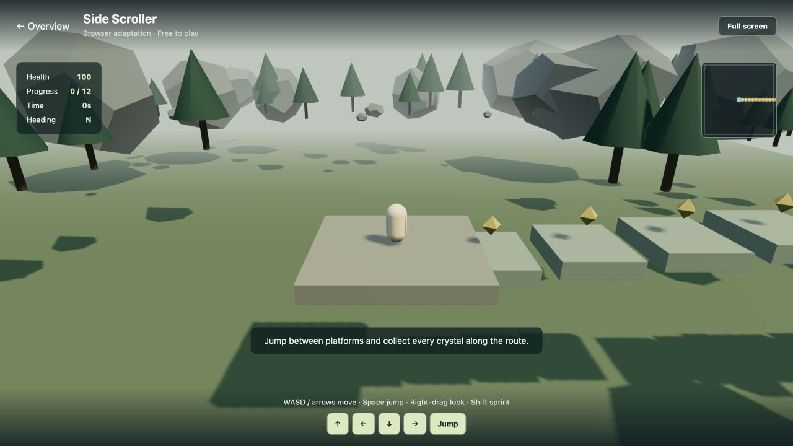
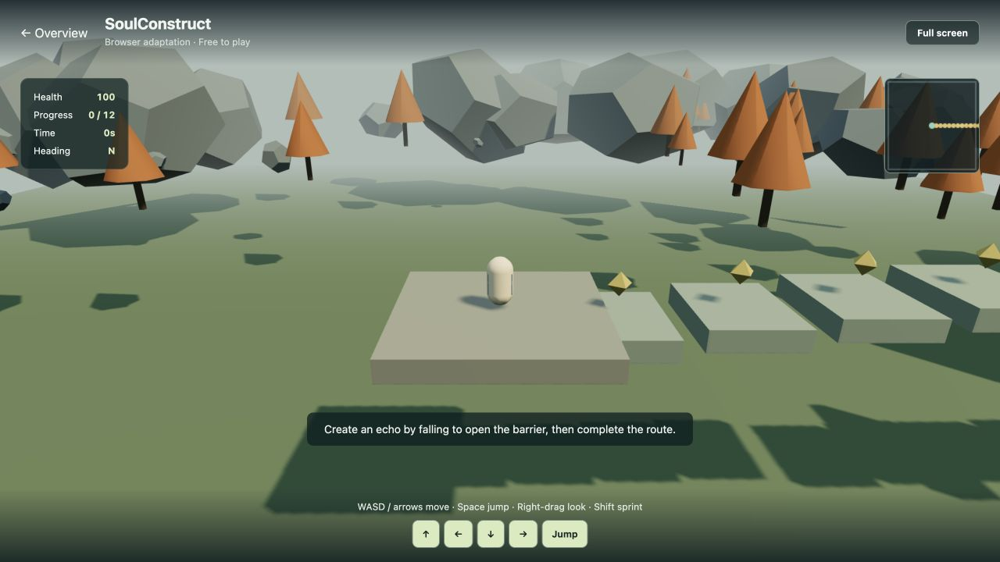

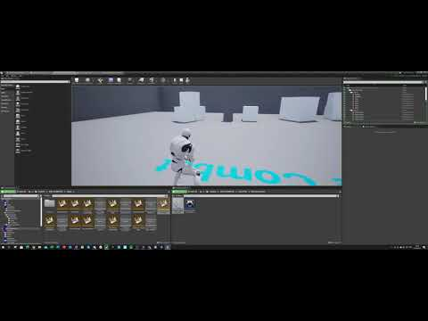
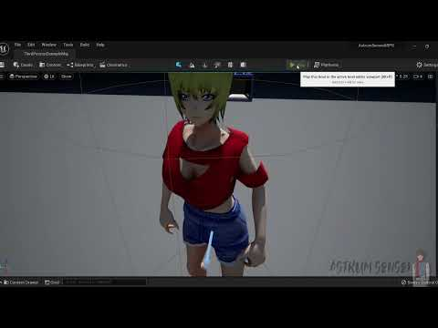
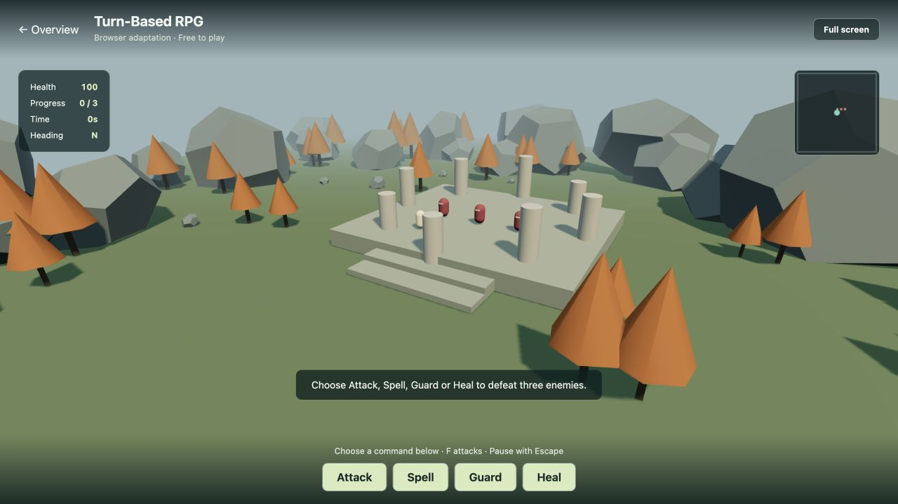

Unreal Engine · Browser adaptation
Material Workshop
A collection of Unreal Engine material setups focused on the appearance of three-dimensional surfaces. The project explores how material choices change the way objects and environments read under lighting.
- Surface materials
- Texture presentation
- Material appearance under lighting
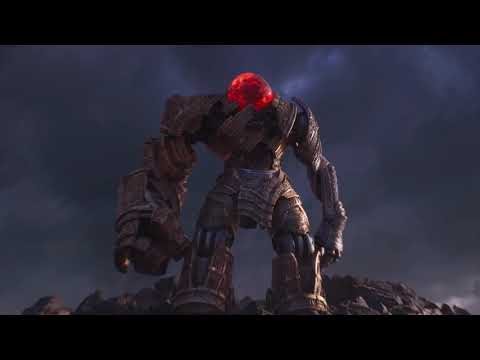